Ce texte vise à faire prendre conscience aux chercheurs de l'existence d'un parallèle entre les récits de rencontres rapprochées des témoins, parfois décrites par le témoin lui-même comme une confrontation avec un extraterrestre (l'événement ETArnaud Esquerre: Théorie des événements extraterrestre. Essai sur le récit fantastique, Fayard, ), et les scénarios des auteurs de science-fiction et de l'imaginaire au sens le plus large. J'utiliserai des images de diverses sources pour étayer mes arguments, parfois avec ma propre interprétation graphique. À travers des exemples précis, parfois même célèbres dans la littérature ufologique, comme des rencontres rapprochées du troisième type lors de la grande vague de l' en Europe (Chabeuil ) ou à travers des enquêtes personnelles menées par l'auteur (Nancy ), vous passerez dans « une autre dimension », qui rappelle la série télévisée mondialement célèbre The Twilight Zone (La Quatrième Dimension).
Pour comprendre ma démarche ufologique, je dois dire quelques mots de mon expérience personnelle. Dans les années , adolescent, je lisais des bandes dessinées d'aventure et de science-fiction, et j'ai commencé une collection sur le thème des soucoupes volantes et des extraterrestres, qui compte aujourd'hui 1 370 titres. En , un ami m'a prêté le 1er album de Lob et Gigi, Le dossier des soucoupes volantes, Dargaud (des histoires de témoignages d'ovnis en images, publiées dans le magazine Pilote en )Jacques Lob and Robert Gigi: Le Dossier des soucoupes volantes, Pilote, , and Dargaud, . Cela m'a beaucoup impressionné et m'a même poussé à entreprendre une longue recherche (40 ans) dans ce domaine.
En , j'ai même eu l'immense plaisir, en amateur passionné, de pouvoir acheter les planches originales de cet album illustrant l'observation de Kenneth Arnold en .
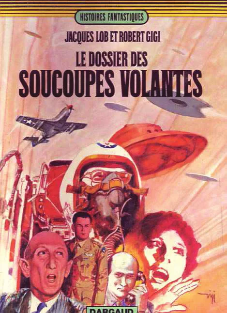
Depuis, j'étudie les liens possibles entre les images publiées dans la littérature de science-fiction et de fantastique et les cas d'observations d'ovnis, comme mes prédécesseurs Bertrand Méheust, Marc Hallet, Michel Meurger et Jean-Bruno Renard.
Ce que je trouve intéressant, c'est donc de démontrer l'antériorité de la fiction sous diverses formes (images, bandes dessinées, livres illustrés pour enfants, séries télévisées, films, publicités) sur les témoignages d'ovnis.
Si la littérature de fiction comme le Merveilleux-scientifiqueExhibition and lectures: Le Merveilleux-scientifique, une Science-fiction à la française, BNF, , avant la science-fiction, joue sans aucun doute un rôle dans l'imaginaire des témoins, je pense que les images influencent de façon bien plus significative et durable leur vision du monde. Et surtout, depuis le début du XXᵉ siècle, elles ont été largement diffusées avec l'explosion de la presse écrite, puis des médias audiovisuels. Ainsi, inévitablement, un dessin publié dans un journal touchera un très grand nombre de personnes, quel que soit leur âge. Rappelons que dès le début, les dessins publicitaires, les caricatures et diverses illustrations ont été publiés dans les journaux avant l'usage des photographies.
Mais soyons concrets et examinons ces quelques exemples de coïncidences entre la fiction et l'ufologie.
Dans la saga de Mandrake, the Magician (Mandrake le magicien) et de sa fiancée Narda, on rencontre souvent des extraterrestres de toutes sortes. Dans l'épisode Les conquérants de l'espace, publié en France en Mandrake, No. 306, Les Conquérants de l’espace, Éditions des Remparts, , de minuscules extraterrestres atterrissent sur Terre, rencontrent Narda et réduisent sa taille grâce à un rayon. Mandrake parvient à les retrouver et sauve sa fiancée. Il se penche près d'un arbuste pour en attraper un dans sa main...
En , après une cueillette de champignons dans les bois de Renêve (Côtes-D'Or)[Note de RR0] Le village est Renève, dans le département de la Côte-d'Or., un curé voit un minuscule homoncule sous un arbuste. Celui-ci, effrayé, s'enfuit avant que le témoin parvienne à l'attraper. Le cas n'a été connu des ufologues et de la presse locale qu'en . Les ufologues parisiensPhénomènes Spatiaux, No. 45, GEPA, n'ont pas hésité à le qualifier d'ufonaute alors qu'aucun ovni n'avait été vu.
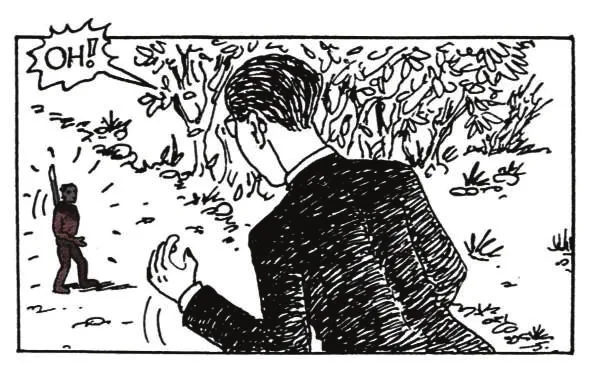
Le témoin a pu être influencé par cette bande dessinée ou par une autre source, comme un film. En effet, en , Tod Browning réalisait le film Les Poupées du diableTod Browning’s film Les poupées du diable, [Note de RR0] Le titre original du film de Tod Browning est The Devil-Doll, et non The Devil’s Dolls comme l'écrit le livre., où un savant fou réduit des humains à la taille de petites poupées. Il les saisissait dans sa main.
Ou bien le curé avait-il lu le roman Les Petits Hommes de la pinède, écrit en par Béliard ?Béliard: Les petits hommes de la pinède, Nouvelle société d’édition, Dans ce roman, un savant fou a réussi à créer une humanité miniature et la fait évoluer dans sa forêt en l'observant. Son assistant commet l'erreur d'entrer dans la forêt et s'empare d'une minuscule femme sauvage qui le prend pour un dieu.
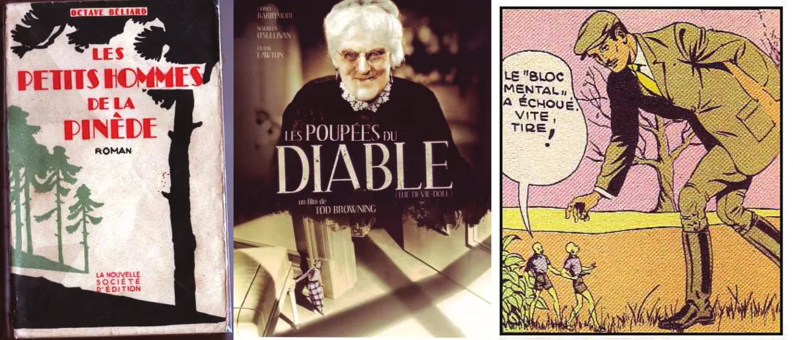
Comme on le voit, le principe de la réduction de la taille d'un être humain est un artifice utilisé depuis longtemps par les auteurs de la littérature fantastique.
Pendant la « grande vague de l'automne », le cas de Chabeuil (Drôme) est devenu célèbreMichel Figuet: Enquête, SERPAN archives. En , une femme se promenait dans la campagne avec son chien lorsqu'une étrange silhouette casquée s'est approchée d'elle à travers un champ. Elle s'est rendu compte avec effroi que le petit scaphandrier n'avait rien d'ordinaire. Elle a crié et la silhouette a disparu. Puis un ovni a décollé.
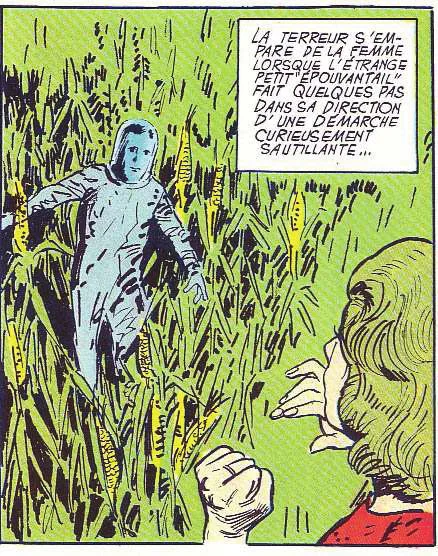
À la même époque, dans la presse destinée aux jeunes lectrices, le personnage de CapucineCapucine, Édition des Remparts, rencontrait des Sélénites casqués (« habitants de la Lune ») descendant de leur soucoupe à la campagne, et avouait avoir eu peur. Un enlèvement d'humains par des extraterrestres est paru dans cette bande dessinée le .
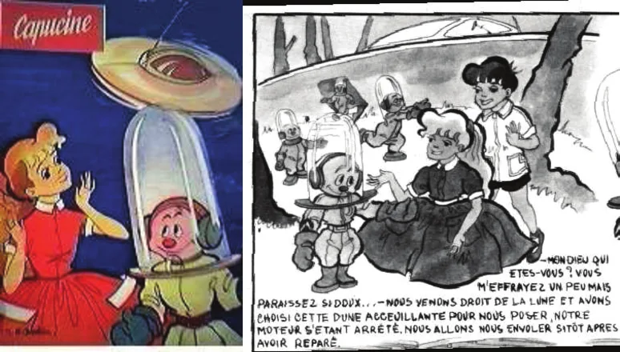
La témoin de Chabeuil de a-t-elle été influencée par la lecture de ce livre illustré publié en , ou faut-il chercher une autre piste ?
Il y a quelques années, mon ami Michel Figuet, enquêteur ufologique et président de la SERPAN, m'a demandé de vérifier dans mes bandes dessinées si une histoire semblable existait dans la fiction. Il avait en effet enquêté sur une observation survenue au , un après-midi vers 16 h. Un écolier de 12 ans qui habitait SorguesJulien Henry and Michel Figuet: Ovni en Provence, Édition Haute-Provence, , pp. 231-233, dans le Vaucluse, a déclaré avoir vu un engin au sol dans un bois, en présence d'un petit humanoïde. L'« extraterrestre » avait pointé vers le témoin une arme futuriste qui l'avait paralysé. Puis l'étrange personnage avait sauté dans son engin avant de décoller.
J'ai découvert une série de ressemblances entre la description de l'humanoïde et un personnage de la presse enfantine devenu très célèbre. Le tableau suivant compare leurs caractéristiques :
| L'humanoïde ET | Le personnage de bande dessinée |
|---|---|
| Un petit être de 40 à 50 cm | petite taille |
| Une combinaison couvrant de la tête aux pieds | poils couvrant la tête |
| Le crâne avait la forme d'un œuf | crâne ovale |
| De grands yeux | De grands yeux |
| Une petite bouche | Une petite bouche |
| N'a pas remarqué d'oreille | oreille non humaine sur le haut du crâne |
| Marche comme quelqu'un qui a les pieds plats | pieds plats de singe |
| Il levait les genoux si haut qu'il semblait sauter | jambes tendues pour sauter |
| Il faisait de très grands bonds | très grands bonds |
Il criait : hic...hic... |
Il criait : houba...houba... |
| Il levait les bras au ciel | levait souvent les bras au ciel |
| Très agile pour sa taille | Très agile comme un singe |
Les ressemblances sont nombreuses. Ce personnage n'est autre que le Marsupilami, créé par le dessinateur belge André Franquin pour le magazine SPIROU en .
Si l'on creuse le témoignage, le jeune témoin décrit l'engin au sol : un engin étrange, il n'avait pas l'air
fait de métal solide, comme du SPIROR (?) qui pouvait bouger
. Or, d'une part, le Marsupilami est l'animal de
compagnie de SPIROU et, d'autre part, dans l'album intitulé Le dictateur et le champignonAndré Franquin: Les aventures de Spirou et Fantasio, Le dictateur et le
champignon, Dupuis, (,
et ), un inventeur farfelu a inventé un
aérosol qui ramollit le métal.
On lit dans le témoignage : Le petit être a sorti une sorte de pistolet qui ressemblait à un petit sèche-cheveux
et l'a dirigé vers le jeune témoin
, et l'a paralysé.
Dans l'album Z comme ZorglubAndré Franquin: Les aventures de
Spirou et Fantasio, Z comme Zorglub, Dupuis, (), un génie du mal a créé des engins volants et armé ses gardes de paralyseurs en
forme de sèche-cheveux ! Dans cet album, il est question de centaines d'objets non identifiés
.
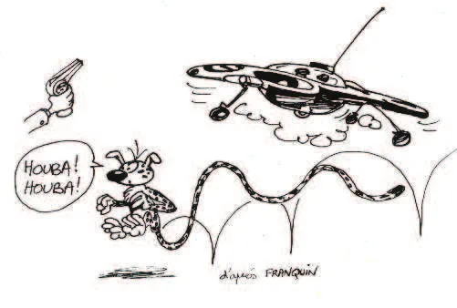
Je pense que notre jeune témoin avait lu ces bandes dessinées largement diffusées et qu'il s'en était inspiré pour inventer son histoire ufologique.
Ces cas, comme bien d'autres, montrent qu'il est utile de vérifier systématiquement le contexte culturel d'un cas d'ovni.
Le à Valensole (Alpes-de-Haute-Provence)Phénomènes Spatiaux, No. 5, GEPA, , un agriculteur travaillait dans son champ de lavande lorsqu'il a découvert un engin inconnu et deux petits pilotes. L'un des deux humanoïdes a pointé un tube qui l'a paralysé. Il faut noter que les petits hommes étaient chauves, parlaient une langue inconnue et étaient armés d'un pistolet paralysant. Ils ont examiné le corps du témoin paralysé et semblaient bienveillants.
En fouillant dans mes références de bandes dessinées, j'ai découvert une histoire intitulée Passager de soucoupe volante dans une série appelée A travers le monde, publiée en (rééditée en , OKAY)A travers le monde, No. 96, “Passager de soucoupe volante,” SEG, .
La couverture accrocheuse montre un jeune cavalier et un troupeau de taureaux fuyant une soucoupe volante. L'introduction parle d'une soucoupe volante en Provence !
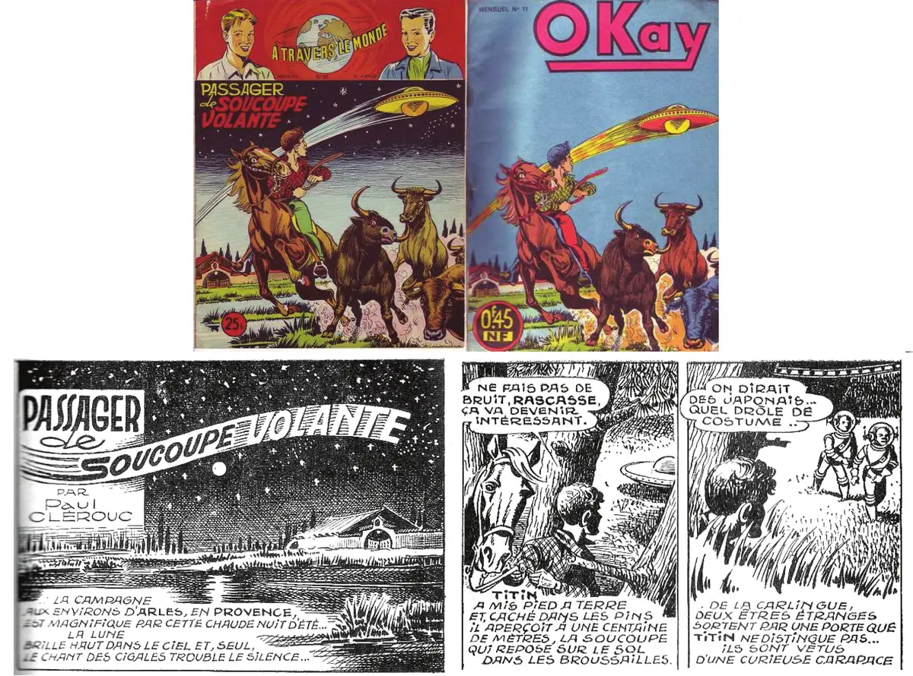
Dans la bande dessinée, le héros découvre l'atterrissage d'une soucoupe volante et les deux petits pilotes chauves.
L'interprétation de la rencontre du troisième type par Lob et Gigi chez Dargaud en Jacques Lob and Robert Gigi: Ovni dimension autre, Dargaud, , pp. 10-12 montre le pilote chauve paralysant le témoin avec un pistolet à rayons. Dans la version illustrée, le pilote chauve paralysait avec un pistolet à rayons un cavalier trop curieux.
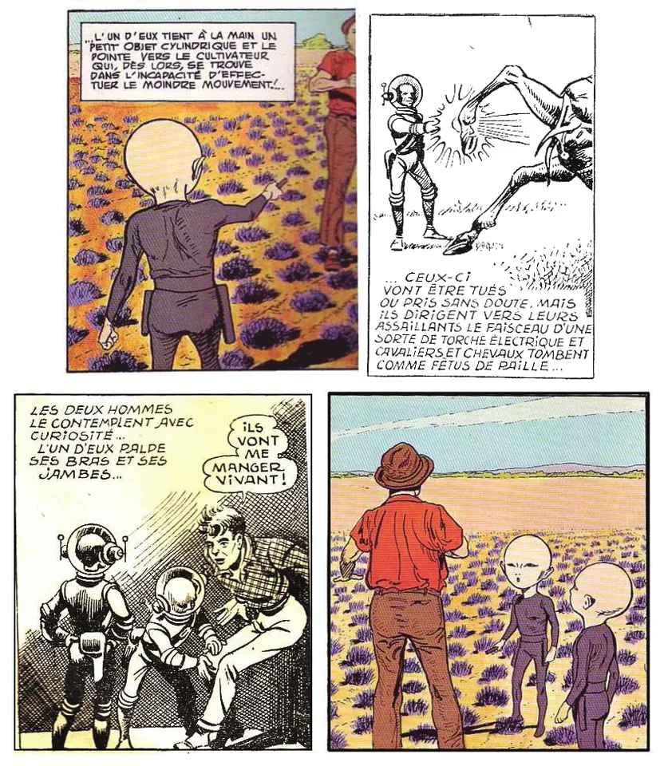
Le témoin est examiné de près par les deux pilotes dans les deux histoires.
Les éléments descriptifs de cette rencontre rapprochée du troisième type sont exactement les mêmes que dans le scénario de la bande dessinée d'aventure antérieure.
Quant à la marque trouvée dans le champ, selon la contre-enquête de deux chercheurs, elle serait due à la foudreP. Vachon and P. Seray: Marliens et les cas similaires, SO, No. 5, .
En , le journal de bandes dessinées Météor a publié sur plusieurs mois une histoire intitulée La boule volanteMétéor, No. 151, “La boule volante,” AREDIT, , où un groupe d'adolescents voyageait dans une sphère construite par leur ami, un scientifique. Ils rencontraient même une population de petits extraterrestres chauves sur une île (Au pays des Iskirs, )Météor, No. 154, “Au pays des Iskirs,” AREDIT, .
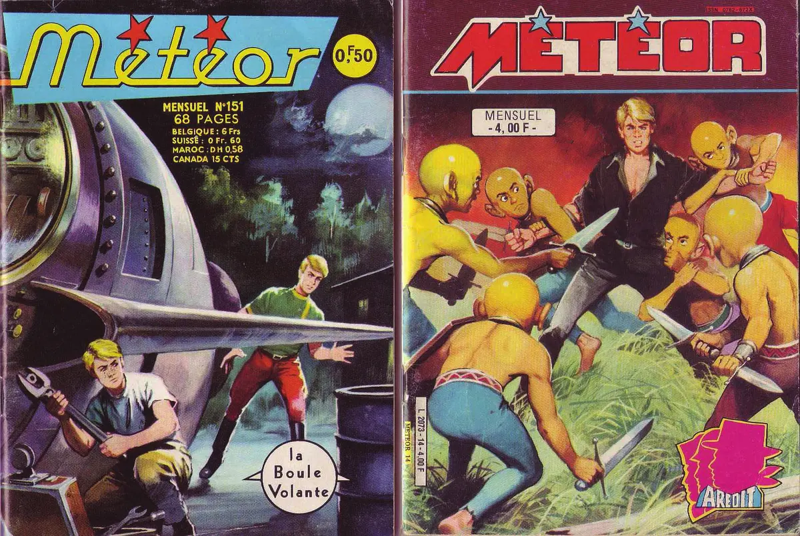
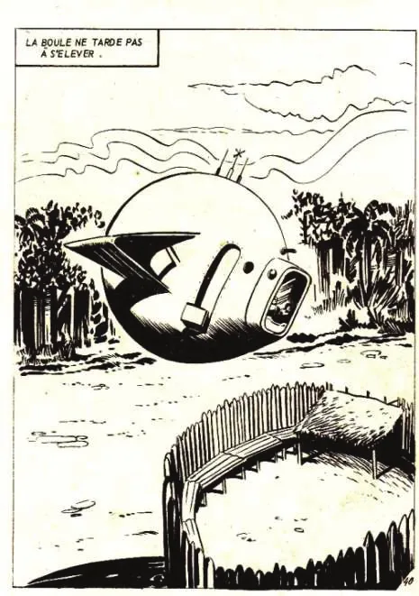
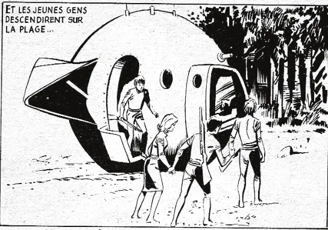
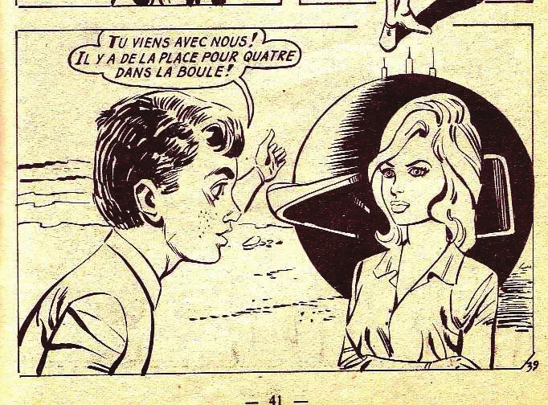
Le , vers , deux enfants qui gardaient les vaches non loin du village de Cussac (Cantal) ont remarqué, dans un autre pré et derrière un rideau d'arbres, la présence d'une grosse sphère d'aspect métallique qui reflétait les rayons du soleil. Ils ont vu quatre petites silhouettes noires qui semblaient s'affairer autour. La sphère a décollé et l'un des personnages, resté au sol, est remonté en volant dans l'engin, qui a fini par s'éloigner au loinPhénomènes Spatiaux, No. 16, GEPA, , p. 27.
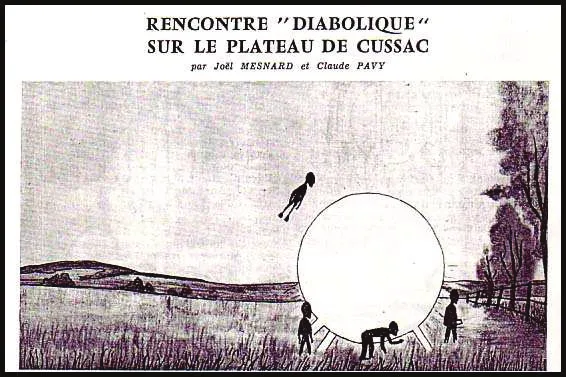
Les deux jeunes témoins avaient-ils lu cette bande dessinée et réinventé leur propre histoire d'après elle ?
À partir des années , un autre média a largement diffusé les images de l'imaginaire dans la population : la télévision.
La rencontre rapprochée du troisième type du à NancyRéalité ou Fiction, No. 2, “Les enquêtes du GPUN en bande dessinée,” Nancy, décrivait l'observation d'une petite soucoupe volante à coupole transparente survolant les toits de la ville. Le témoin a vu la scène depuis sa fenêtre. La femme a vu l'appareil s'approcher lentement, puis a remarqué la présence de deux petites têtes de pilotes qui lui souriaient. Elle a ressenti une forte chaleur et une odeur puissante. La soucoupe s'est éloignée pour en rejoindre deux autres sur l'horizon nocturne. Le témoin a ensuite remarqué qu'elle avait une bosse sur le front et que ses mains étaient enflées, comme irradiées.
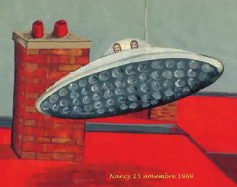
Après de longues recherches, j'ai eu l'occasion de regarder la série télévisée The Twilight Zone (La Quatrième Dimension), diffusée en France pour la première fois en . Un épisode a retenu mon attention. C'était le n° 15, The Invaders (Les Envahisseurs)TV series, The Twilight Zone, season 2, No. 15, “The Invaders,” CAYUGA production, CBS :
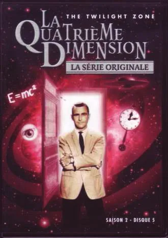
Comparons les deux scénarios de ces « histoires extraordinaires ».
Phase 1 :
Le témoignage ufologique : « Une femme seule dans son appartement en ville a vu arriver une petite soucoupe volante métallique à coupole qui s'approchait d'elle au-dessus des toits ».
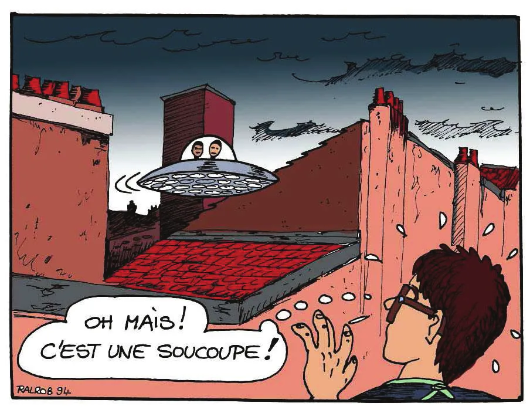
Le scénario de SF : « Une femme seule dans sa ferme à la campagne s'est rendu compte qu'une petite soucoupe volante métallique à coupole s'était posée sur le toit ».
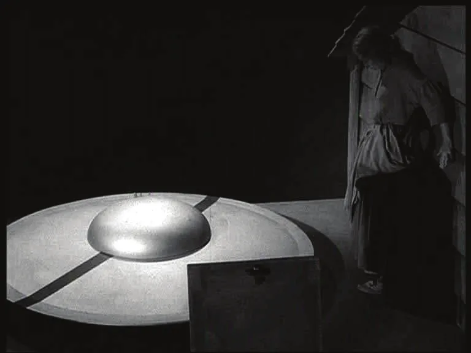
Phase 2 :
Le témoignage ufologique : « La femme a remarqué que deux tout petits pilotes étaient visibles, elle a ressenti des picotements sur la peau dus au rayonnement des phares de l'engin ».
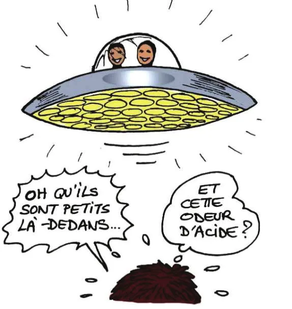
Le scénario de SF : « La femme anxieuse a remarqué la présence de deux petits astronautes qui s'étaient posés sur le toit, et l'un d'eux lui a tiré dessus avec un rayon ».
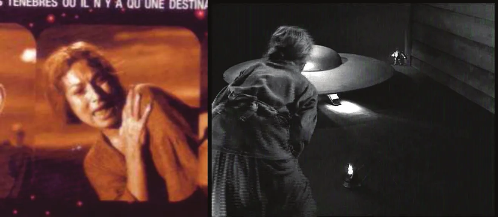
Phase 3 :
Le témoignage ufologique : « Le témoin s'est réfugiée chez elle, dans sa cuisine, et a remarqué qu'elle avait des stigmates sur la peau des mains et sur le front ».
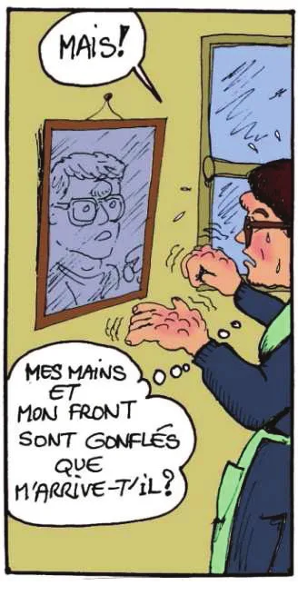
Le scénario de SF : « La femme est retournée dans sa cuisine et a vu avec effroi les stigmates sur la peau de ses mains et de son cou ».
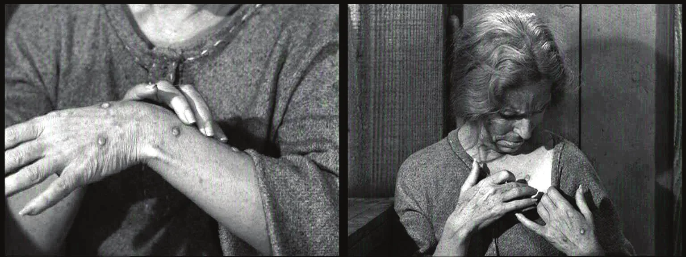
Contrairement au scénario de fiction, l'aventure ufologique est perçue positivement par le témoin. Mme X... a reconnu avoir trouvé la « scène » merveilleuse.
Dans le scénario de Twilight Zone, la femme agressée se défendait en fracassant le vaisseau spatial après avoir brûlé ses minuscules assaillants. Les téléspectateurs découvraient l'emblème du vaisseau détruit : les « armoiries américaines de l'US Air Force ». Il ne s'agissait donc pas d'ET miniatures mais d'explorateurs terriens qui avaient découvert une planète de géants. Cette fin surprenante est l'une des caractéristiques de cette série très originale pour l'époque.
Cette série a été diffusée plusieurs fois à la télévision française et au Luxembourg. Je pense que le témoin de Nancy a pu voir cet épisode précis. La bosse sur son front et l'hallucination qui a suivi ont pu déclencher ce souvenir de fiction, si frappant à l'époque. Soulignons les éléments forts : une femme seule dans sa cuisine, l'apparition sur le toit, la dimension exceptionnellement réduite de la soucoupe classique en « tôle et boulons », de tout petits pilotes et des stigmates très localisés sur le témoin, le tout dans un contexte médiatique favorable à la « rêverie spatiale » (en pleine conquête spatiale américaine).
Dans la même région de Nancy (Lorraine), un autre cas avec traces
a fait l'objet d'une enquête du GEPAN en . C'est
le dossier nommé « l'Amarante »[Note de RR0] Le livre
cite Note technique du GEPAN No. 1, enquête 86/06, CNES, Toulouse
. L'enquête 86/06 du GEPAN (le cas de
l'Amarante) fait l'objet de la Note technique n° 17, et non n° 1..
Le , un témoin qui travaillait dans son jardin vers midi a vu un petit objet descendre du ciel. L'objet rond a plané au-dessus du jardin. Le témoin s'en est approché tout près et a remarqué qu'il s'agissait d'une petite soucoupe volante métallique couleur bleu-vert lagon. L'engin a décollé et s'est éloigné. Des traces ont été relevées sur la végétation par la gendarmerie et étudiées par les scientifiques du GEPAN.
Or, le , la chaîne FR3 avait diffusé un téléfilm de fictionPhilippe Monnier: La soucoupe de solitude, FR3, intitulé La soucoupe de solitude, dans lequel une petite soucoupe volante bleutée survolait une jeune femme dans sa cour. Elle descendait au-dessus de sa tête. La témoin s'évanouissait. Des scientifiques récupéraient l'objet extraterrestre pour l'étudier. Extraits :
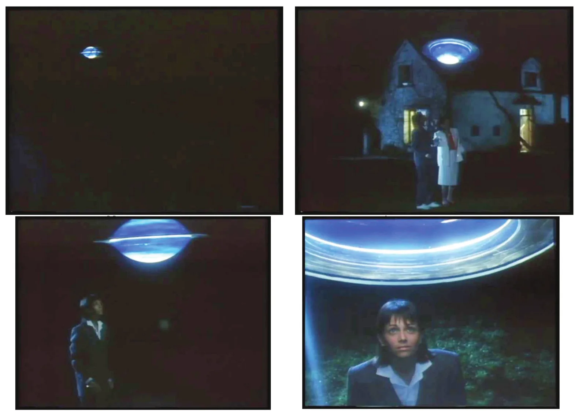
Le témoin a-t-il été influencé par cette fiction ? Ou faut-il chercher ailleurs l'explication de cette troublante coïncidence entre l'imaginaire et la réalité.
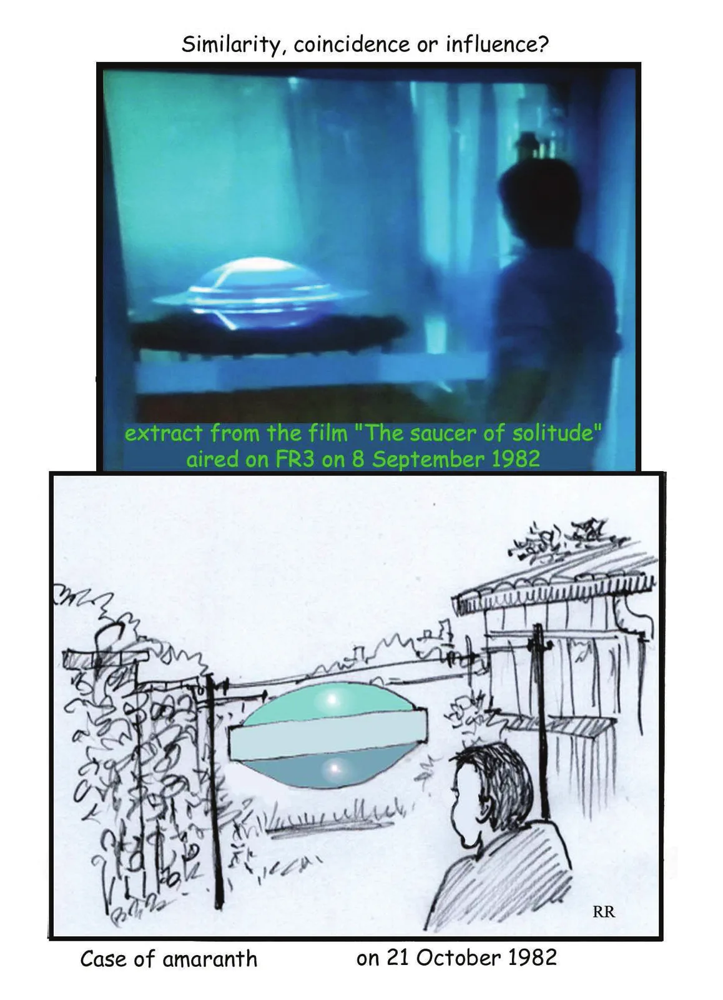
Que pouvons-nous en conclure ? Avec ces quelques exemples, nous avons vérifié comment ces cas d'observations d'ovnis et d'« extraterrestres » étaient apparus auparavant dans l'imagination des scénaristes de livres illustrés ou de films.
Face à cela, trois pistes s'offrent à nous :
J'invite le lecteur averti à trancher ce nœud gordien.